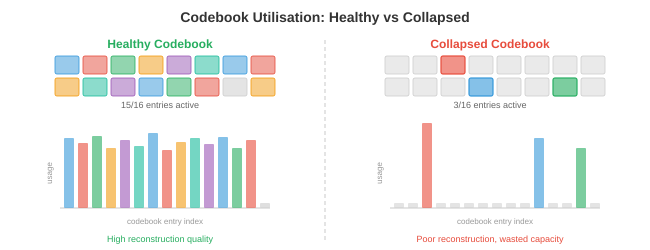
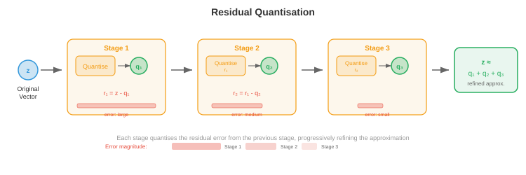
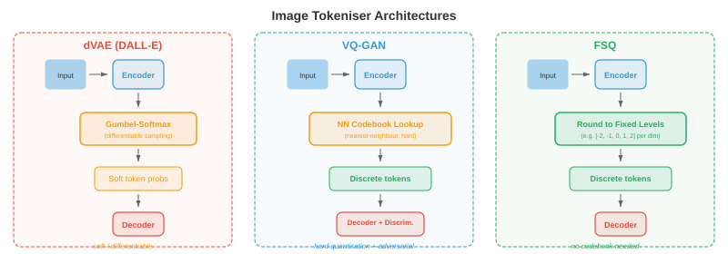

图像与视频词元化¶
图像与视频词元化将连续的视觉数据转换为离散的词元序列，使 Transformer 能够像处理文本一样处理它们。本节涵盖 VQ-VAE、VQ-GAN、码本学习、DALL-E 的 dVAE、视频词元化以及免查询词元化。
为什么要对图像进行词元化¶
-
把语言想象成一个有限的字母表：英语大约有 26 个字母，现代语言模型将文本切分为 30,000 到 100,000 个子词词元。每个句子都变成一串离散符号，Transformer 可以逐个预测。而图像存在于连续的高维空间中：一张 256×256 的 RGB 图像就是 \(\mathbb{R}^{256 \times 256 \times 3} \approx \mathbb{R}^{196{,}608}\) 中的一个点。如果你希望语言模型用与说英语同样的机制来"说"图像，就需要将这些连续的像素数组转换为一串可管理的离散词元，这些词元来自一个有限的词汇表。这种转换就是图像词元化。
-
想象你是一位马赛克艺术家。你没有无限多种瓷砖色调，只有一个固定的调色板，比如说 8192 种不同的瓷砖颜色。要再现一张照片作为马赛克，你必须 (1) 确定每个瓷砖代表照片的哪个区域，(2) 为每个区域选择最接近的瓷砖颜色，(3) 接受一些细节的丢失，但整体画面仍然可辨认。图像词元化做的正是这件事：编码器将空间块压缩为潜在向量，码本将每个向量映射到其最近的条目，结果是一个整数索引网格（每个块对应一个索引），离散模型可以处理它。
-
词元化的好处有三方面。首先，它大幅压缩了图像：一张 256×256 的图像可能变成一个 16×16 的词元网格，序列长度从 65,536 个像素减少到 256 个词元，这对于成本随序列长度呈二次方增长的注意力模型来说是可行的。其次，它统一了表示形式：文本词元和图像词元位于同一个离散词汇表中，使得单个自回归 Transformer 可以生成交织的文本和图像。第三，它施加了一个有用的瓶颈，迫使模型学习语义上有意义的编码，而不是记忆像素噪声。

- 回顾第 8 章中卷积网络如何从图像中提取层次化特征图，以及第 7 章中文本词元化器如何将字符串转换为整数序列。图像词元化正处于两者的交汇点：它使用 CNN 或视觉 Transformer 编码器（第 8 章）产生空间特征，然后借用离散词汇表的思想（第 7 章）将这些特征转换为词元索引。
VQ-VAE：向量量化¶
-
正如我们在第 6 章中看到的，标准变分自编码器（VAE）将输入编码为连续潜在分布，并从该分布中采样再解码为重建结果。潜在空间是连续的，这使得将其输入离散序列模型变得困难。向量量化变分自编码器（VQ-VAE），由 van den Oord 等人（2017）提出，通过引入一个可学习的嵌入向量码本，并将每个编码器输出映射到其最近的码本条目，用离散潜在表示取代了连续潜在表示。
-
想象一个藏书室，里面有恰好 \(K\) 个贴有标签的书架。当一本新书（编码器输出）到达时，图书管理员将它放在与其现有书籍（码本向量）最相似的书架上，并记录下书架编号。之后，要取回这本书，你只需要书架编号：那个书架上的码本条目就是一个足够好的替代。这就是向量量化。
-
形式上，VQ-VAE 有三个组件：
-
编码器 \(E\)，将输入图像 \(\mathbf{x} \in \mathbb{R}^{H \times W \times 3}\) 映射到连续潜在向量的空间网格 \(\mathbf{z}_e = E(\mathbf{x}) \in \mathbb{R}^{h \times w \times d}\)，其中 \(h \times w\) 是降采样后的空间分辨率，\(d\) 是嵌入维度。
-
码本 \(\mathcal{C} = \{\mathbf{e}_1, \mathbf{e}_2, \ldots, \mathbf{e}_K\} \subset \mathbb{R}^d\)，包含 \(K\) 个可学习的嵌入向量。典型码本大小范围为 512 到 16,384 个条目。
-
解码器 \(D\)，从量化后的潜在表示重建图像。
-
-
量化步骤将每个编码器输出 \(\mathbf{z}_e(\mathbf{x})\) 在空间位置 \((i, j)\) 处替换为最近的码本条目：
- 这是在嵌入空间中的最近邻查找，与 k-means 分配（第 6 章）完全相同。索引 \(k^\ast\) 是空间位置 \((i,j)\) 的离散词元，整张图像被表示为一个 \(h \times w\) 的整数网格，取值范围为 \(\{1, \ldots, K\}\)。

- 挑战在于 \(\arg\min\) 是不可微的：你无法通过离散选择进行反向传播。VQ-VAE 通过直通估计器解决了这个问题：在前向传播过程中，解码器接收 \(\mathbf{z}_q\)（量化后的向量）；在反向传播过程中，重建损失相对于 \(\mathbf{z}_q\) 的梯度被直接复制到 \(\mathbf{z}_e\)，就好像量化步骤是恒等函数一样。这可以简洁地写为：
-
其中 \(\text{sg}(\cdot)\) 是停止梯度算子。在前向传播中，计算结果为 \(\mathbf{z}_q\)；在反向传播中，梯度仅流经 \(\mathbf{z}_e\) 项。
-
完整的 VQ-VAE 损失包含三项：
-
重建损失训练编码器和解码器忠实地再现输入。码本损失（也称为 VQ 损失）将码本向量拉向编码器输出；注意 \(\text{sg}(\mathbf{z}_e)\) 意味着编码器不会从这一项接收梯度，因此它只更新码本。承诺损失则相反：它鼓励编码器输出保持接近码本向量，防止编码器"远离"码本。超参数 \(\beta\)（通常为 0.25）控制码本损失和承诺损失之间的平衡。
-
在实践中，码本通常使用指数移动平均（EMA）而不是梯度下降来更新，这样更稳定。令 \(\mathbf{n}_k\) 为分配给码本条目 \(k\) 的编码器输出计数，\(\mathbf{s}_k\) 为它们的和。EMA 更新为：
- 其中 \(\gamma\) 是衰减率（通常为 0.99）。这等价于对编码器输出运行在线 k-means 算法。
码本坍塌¶
-
VQ-VAE 一个臭名昭著的失败模式是码本坍塌（也称为索引坍塌）：模型只学会使用 \(K\) 个码本条目中的一小部分，导致大多数条目"死亡"。想象一个图书馆，90% 的书架是空的，因为图书管理员总是把书送到同样的几个热门书架上。这浪费了表示能力。
-
码本坍塌的发生是因为编码器、码本和解码器在训练过程中共同适应。如果一个条目在几个批次中都没有被选中，它就会漂离编码器流形，使其更不可能被选中，从而形成正反馈循环。
-
缓解码本坍塌的几种技术：
- 码本重置：定期通过随机采样编码器输出重新初始化死亡条目。这为死亡条目在潜在空间活跃区域附近提供了一个新的起点。
- 带拉普拉斯平滑的 EMA 更新：向 \(\mathbf{n}_k\) 添加一个小常数，防止任何条目计数为零，确保所有条目都能接收到梯度信号。
- 承诺损失调优：增大 \(\beta\) 迫使编码器输出更紧密地聚集在码本条目周围，使分配更均匀。
- 分解编码：将码本查找分解为多个较小查找的乘积（例如，两个大小各为 \(\sqrt{K}\) 的码本），通过减少每次查找的有效码本大小来提高利用率。
- 熵正则化：添加一个惩罚项，鼓励码本使用上的均匀分布，最大化熵 \(H = -\sum_k p_k \log p_k\)，其中 \(p_k\) 是经验分配概率。

VQ-GAN：对抗训练实现更高保真度¶
-
VQ-VAE 能产生不错的重建效果，但像素级的 \(\ell_2\) 损失往往会产生模糊的输出，因为它对每个像素偏差都同等惩罚，在合理的细节上取平均而不是选择清晰的细节。想象一下，要求某人画一张脸，使得与所有可能的脸的平均差异最小——他们会画出一张模糊的平均脸，而不是一张清晰的特定人脸。
-
VQ-GAN（Esser 等人，2021）通过将 VQ-VAE 框架与生成对抗网络（第 6 章）中的判别器相结合来解决这个问题。判别器是一个基于块的卷积网络，用于判断局部图像块是真（来自训练数据）还是假（来自解码器）。这种对抗损失鼓励解码器产生感知上清晰、逼真的纹理，而不是像素级的平均值。
-
VQ-GAN 目标函数在 VQ-VAE 损失的基础上增加了两项：
- 对抗损失 \(\mathcal{L}_\text{adv}\) 是应用于解码器输出的标准 GAN 目标。判别器 \(\mathcal{D}\) 试图区分真实块和解码块，而解码器（生成器）试图欺骗它。非饱和形式为：
- 感知损失 \(\mathcal{L}_\text{perc}\) 比较原始图像和重建图像在预训练网络（通常是 VGG 或 LPIPS）中的特征激活：
-
其中 \(\phi_l\) 表示预训练网络在第 \(l\) 层的特征图。这个损失捕捉的是高层结构相似性，而非像素级精度。
-
权重 \(\lambda_\text{adv}\) 被自适应地设置，使得对抗梯度和重建梯度保持平衡，防止在训练早期重建效果还很差时对抗损失占主导。

- 结果是，在相同码本大小下，VQ-GAN 产生的词元化器重建效果远比 VQ-VAE 清晰。VQ-GAN 是许多主要图像生成系统（包括最初的 DALL-E、Parti 以及众多文生图模型）背后的骨干词元化器。它将 256×256 的图像转换为 16×16 或 32×32 的离散词元网格，来源于大小为 1024–16384 的码本，在每个空间维度上实现 16 倍到 64 倍的压缩比。
残差量化与多尺度码本¶
-
单个码本对重建质量施加了一个硬上限：每个空间位置恰好由一个码本向量表示，任何比码本所能表达的更精细的细节都会丢失。想象用固定调色板中的一个词来描述一种颜色："青色"很接近但不精确。如果你能添加一个细化描述——"青色，但稍微偏蓝一点，亮一点"——你就能得到更接近的结果。
-
残差量化（RQ）迭代地应用了这一思想。在第一次量化步骤产生 \(\mathbf{z}_q^{(1)}\) 之后，计算残差 \(\mathbf{r}^{(1)} = \mathbf{z}_e - \mathbf{z}_q^{(1)}\)，然后对残差使用第二个码本进行量化得到 \(\mathbf{z}_q^{(2)}\)，以此类推，共 \(T\) 个层级：
-
最终的量化表示为 \(\hat{\mathbf{z}} = \sum_{t=1}^{T} \mathbf{z}_q^{(t)}\)。使用 \(T\) 个层级，每个层级码本大小为 \(K\)，有效词汇表大小为 \(K^T\)，但你只需要存储 \(T \times K\) 个向量，而不是 \(K^T\) 个。例如，8 个层级，\(K = 1024\)，有效条目数为 \(1024^8 \approx 10^{24}\)，而只存储了 8192 个向量。
-
每个后续层级捕捉更精细的细节：第一个码本捕捉粗略结构，第二个捕捉中频修正，依此类推。这类似于 JPEG 中的逐次逼近或网页图像中的渐进式渲染，先出现粗略版本，然后逐步填充细节。

-
多尺度码本通过在不同空间分辨率上操作来扩展这一思想。不是重复量化同一个空间网格，而是在多个尺度上进行量化：粗粒度网格捕捉全局结构，细粒度网格捕捉局部细节。这与第 8 章目标检测部分中的特征金字塔思想相关，其中不同尺度的特征捕捉不同层次的细节。
-
乘积量化是一种相关技术，将 \(d\) 维潜在向量拆分为 \(M\) 个维度为 \(d/M\) 的子向量，每个子向量使用自己的码本独立量化。这使得有效词汇表达到 \(K^M\)，同时只存储 \(M \times K\) 个向量。乘积量化广泛应用于近似最近邻搜索（第 13 章），并已被适配用于图像词元化。
-
有限标量量化（FSQ），由 Mentzer 等人（2023）提出，采取了一种完全不同的方法：不是学习一个码本，而是简单地将潜在向量的每个维度四舍五入到一组固定整数级别中的一个（例如 \(\{-2, -1, 0, 1, 2\}\)）。每维 \(L\) 个级别，\(d\) 个维度，隐含码本大小为 \(L^d\)。FSQ 完全避免了码本坍塌，因为没有可学习的码本向量，只有被确定性四舍五入的可学习编码器输出。直通估计器处理了四舍五入的不可微性。
实践中的图像词元化器¶
- 从 VQ-VAE 到 VQ-GAN 再到残差量化的演进，催生了一系列实际图像词元化器，用于最先进的生成模型。
DALL-E 词元化器（dVAE）¶
- 最初的 DALL-E（Ramesh 等人，2021）使用离散 VAE（dVAE）将 256×256 图像词元化为 32×32 的词元网格，码本大小为 8192。dVAE 将硬 \(\arg\min\) 量化替换为 Gumbel-Softmax 松弛，使前向传播在训练过程中可微。在推理时，使用 \(\arg\max\) 生成硬词元分配。dVAE 使用重建损失、与均匀先验的 KL 散度以及 Gumbel-Softmax 的学习温度调度组合进行训练。然后 DALL-E 训练了一个 120 亿参数的自回归 Transformer 来建模 256 个文本词元和 1024 个图像词元（32×32）的联合分布。
LlamaGen¶
- LlamaGen（Sun 等人，2024）表明，只要你有一个好的图像词元化器，就可以将标准的 Llama 风格语言模型架构（第 7 章）重新用于自回归图像生成。LlamaGen 使用改进的 VQ-GAN 词元化器，具有大型码本（16,384 个条目），并训练了一个普通的自回归 Transformer（除了词元化器外没有特殊的图像特定修改）以光栅扫描顺序从左到右预测图像词元。关键的见解是，一旦图像被词元化为离散序列，适用于语言的相同下一个词元预测范式也同样适用于图像，这验证了词元化确实弥合了模态鸿沟的观点。
Cosmos 词元化器¶
- Cosmos 词元化器（NVIDIA，2024）设计用于在统一框架中处理图像和视频。它使用因果 3D 架构，将图像视为单帧视频，使得同一个词元化器可以处理两种模态。Cosmos 支持连续和离散两种词元化模式：连续模式输出实值潜在向量（用于扩散模型后端），而离散模式应用有限标量量化产生整数词元（用于自回归模型后端）。编码器使用因果 3D 卷积，使得每帧的词元仅依赖于当前帧和之前的帧，从而支持流式视频词元化。

视频词元化¶
-
视频在图像的二维空间维度上增加了第三个轴——时间。视频是一系列帧，通常为每秒 24–30 帧，相邻帧之间高度冗余，因为在 33 毫秒内视觉世界不会发生剧烈变化。视频词元化利用这种时间冗余来实现比独立词元化每帧高得多的压缩率。
-
把视频压缩想象成一幅翻页书。如果每一页都从头画起，你需要数千张精细的绘图。但大多数页面与相邻页面几乎相同，所以你可以每 10 页画一个完整的"关键帧"，只记录中间页面上的微小变化。视频词元化器自动学会了这个技巧。
3D VQ-VAE¶
-
将 VQ-VAE 扩展到视频的最直接方式是 3D VQ-VAE，它将编码器和解码器中的 2D 卷积替换为同时在空间和时间维度上操作的 3D 卷积。如果编码器在空间上降采样 \(f_s\) 倍，在时间上降采样 \(f_t\) 倍，则 \(T \times H \times W\) 的视频片段变为 \((T/f_t) \times (H/f_s) \times (W/f_s)\) 的词元网格。
-
例如，\(f_s = 16\) 且 \(f_t = 4\) 时，一个 16 帧的 256×256 视频片段变为 \(4 \times 16 \times 16 = 1024\) 的词元序列。这对 Transformer 进行自回归建模来说已经足够紧凑，而原始像素数将是 \(16 \times 256 \times 256 \times 3 \approx 310\) 万个数值。
-
3D 卷积联合学习空间和时间特征。早期层捕捉局部运动（帧间移动的边缘），而更深层捕捉高层动态（物体的出现、消失或形状变化）。这与第 8 章卷积网络中的层次化特征提取原理相同，只是沿时间轴进行了扩展。

因果视频词元化器¶
-
标准 3D 卷积会同时查看过去、当前和未来的帧，这意味着在词元化任何帧之前需要整个视频片段。因果视频词元化器约束时间卷积，使每个输出仅依赖于当前帧和之前的帧，从不依赖于未来的帧。这类似于自回归 Transformer（第 7 章）中的因果掩码：信息在时间上向前流动，但绝不向后。
-
因果词元化对于两种使用场景至关重要。首先，流式处理：你可以在帧到达时实时词元化视频，而无需缓冲未来的帧。其次，自回归生成：当 Transformer 逐帧生成视频时，第 \(t\) 帧的词元必须在不知道第 \(t+1\) 帧的情况下可计算，因为第 \(t+1\) 帧尚未生成。
-
因果约束通过非对称填充时间卷积来实现：时间大小为 \(k\) 的核在过去一侧填充 \(k-1\) 个零，未来一侧填充零个零，确保时间 \(t\) 的输出仅依赖于时间 \(t-k+1, \ldots, t\) 的输入。
-
因果视频词元化器的一个优雅特性是它们可以词元化单张图像（"视频"只有一帧）而无需特殊处理。第一帧没有历史上下文，因此其词元仅从该帧本身计算。这种图像-视频统一意味着单个词元化器可以服务于两种模态，简化了架构，并使模型能够使用同一个解码器生成图像和视频。
时间压缩策略¶
-
不同的应用需要不同的时间压缩比。对于动作识别（其中细微运动很重要），温和压缩（\(f_t = 2\)）可以保留时间细节。对于长视频生成（存储数千帧是不可行的），需要激进压缩（\(f_t = 8\) 或更高）。
-
某些词元化器使用分解压缩：空间和时间压缩在不同的阶段进行。首先，2D 编码器独立压缩每帧，产生每帧的潜在网格。然后，1D 时间编码器跨时间维度进行压缩。这种分解在计算上比完整的 3D 卷积更便宜，并允许空间和时间采用不同的压缩比。其代价是它不能像联合 3D 编码那样高效地捕捉时空模式（如对角线运动的球）。
-
时间插值词元是一项最近的创新，词元化器仅完整编码关键帧，并将中间帧表示为轻量级的插值编码，描述如何在关键帧之间变形。这类似于经典视频压缩（H.264/HEVC 中的 I 帧和 P 帧），但在学习到的潜在空间中进行。

连续词元与离散词元¶
-
并非每个下游模型都需要离散词元。扩散模型（第 10 章，文件 04）原生使用连续值——它们迭代地去噪高斯样本，其损失函数（去噪得分匹配）定义在连续空间上。对于扩散后端，词元化器编码器产生连续潜在向量，从不进行量化。潜在扩散模型（Stable Diffusion、DALL-E 3、Flux）使用类似 VQ-GAN 的编码器-解码器，但完全跳过了码本，在连续潜在空间中操作。
-
而自回归模型（GPT 风格）则使用 \(K\) 类上的 softmax 从有限词汇表中预测下一个词元。它们从根本上需要离散词元。每个使用自回归 Transformer 的图像生成系统（DALL-E、Parti、LlamaGen、Chameleon）都依赖离散词元化器。
-
因此，连续词元和离散词元之间的选择由生成后端决定：
-
在以下情况下使用离散词元：模型是自回归的（使用交叉熵损失的下一个词元预测），你想与文本词元共享词汇表以实现统一的多模态模型，或者你需要精确的词元级控制（例如，通过词元替换进行检索或编辑）。
-
在以下情况下使用连续词元：模型是扩散模型或流匹配模型，任务需要非常高的保真度重建（连续潜在表示完全避免了量化误差），或者你想使用作用于实值向量的回归损失。
-
一些最近的架构支持两种模式。例如，Cosmos 词元化器可以从同一个编码器输出连续潜在表示（用于其扩散模式）或 FSQ 离散化词元（用于其自回归模式），只需一个可以打开或关闭的轻量级量化头。
-
软量化是一个中间地带：不是硬 \(\arg\min\) 分配，而是计算 top-\(k\) 最近码本条目的加权平均，权重由负距离上的 softmax 给出。这比硬量化保留了更多信息，同时仍然近似离散。有些系统在训练时使用软量化，在推理时使用硬量化。

应用¶
自回归图像生成¶
-
一旦图像变成离散词元序列，你就可以训练标准的自回归 Transformer 来建模它们。图像词元被展平为一维序列（通常按光栅扫描顺序：从左到右、从上到下），Transformer 学习 \(p(\text{词元}_i \mid \text{词元}_1, \ldots, \text{词元}_{i-1})\)，使用标准交叉熵损失。在生成时，词元被逐个采样，完整的网格通过词元化器的解码器转换为像素。
-
文本条件化很简单：在图像词元序列前添加文本词元，使模型学习 \(p(\text{图像词元} \mid \text{文本词元})\)。这正是 DALL-E、Parti 和 LlamaGen 执行文生图的方式。文本词元和图像词元共享同一个 Transformer、同一个注意力机制，并且通常共享同一个嵌入表（文本词元和图像词元占据不同的索引范围）。
-
光栅扫描顺序引入了一种人为的非对称性：图像的左上角是在没有任何关于右下角上下文的情况下首先生成的。一些工作解决了这个问题。掩码图像建模（MaskGIT）训练了一个双向 Transformer，同时生成所有词元但置信度不同，迭代地解开最自信的词元。多尺度生成首先生成粗粒度词元（捕捉全局构图），然后用残差词元进行细化。这些方法用纯从左到右生成的简单性换取了更好的全局连贯性。
统一的视觉-语言词元¶
-
图像词元化最深刻的动机是统一：将视觉和语言置于相同的表示格式中，使得单个模型架构可以同时处理两者。正如我们在第 7 章中讨论的，语言模型是极其强大的序列到序列机器。通过将图像表示为词元序列，我们免费继承了语言建模的所有基础设施——预训练配方、缩放定律、RLHF、上下文长度扩展。
-
Chameleon（Meta，2024）是一个突出的例子：它使用具有 8192 个码本条目的 VQ-GAN 词元化器将图像转换为词元，这些词元与文本词元交织在一个约 65,000 个条目（文本 + 图像）的单一词汇表中。标准的 Transformer 在混合文本-图像序列上进行训练，使其能够根据图像生成文本、根据文本生成图像或生成交织的文本和图像内容，全部使用同一次前向传播。
-
Gemini（Google，2024）在大规模上采取了类似的方法，原生地在单个 Transformer 中理解并生成图像、音频和文本，由特定模态的词元化器馈送到共享序列中。
-
统一模型中的关键工程挑战是词汇表平衡：如果 65,000 个词汇表条目中有 8192 个是图像词元，模型可能会分配不足的能力给视觉。解决方案包括为每种模态使用独立的嵌入层（仅在注意力层面共享）、特定模态的损失加权，以及预训练期间仔细的数据混合比例。

编程练习（在 Colab 或笔记本中运行）¶
-
在 JAX 中实现一个最小 VQ 层：给定一批编码器输出向量，执行最近邻码本查找并计算 VQ-VAE 损失（重建 + 码本 + 承诺）。将码本利用率可视化为直方图。
import jax import jax.numpy as jnp import matplotlib.pyplot as plt # --- 最小 VQ 层 --- key = jax.random.PRNGKey(42) d = 8 # 嵌入维度 K = 64 # 码本大小 n_vectors = 256 # 一批编码器输出 # 随机编码器输出和码本 k1, k2 = jax.random.split(key) z_e = jax.random.normal(k1, (n_vectors, d)) # 编码器输出 codebook = jax.random.normal(k2, (K, d)) * 0.1 # 码本（小初始化） # 最近邻查找：为每个 z_e 找到最近的码本条目 # distances[i, k] = ||z_e[i] - codebook[k]||^2 distances = ( jnp.sum(z_e ** 2, axis=1, keepdims=True) - 2 * z_e @ codebook.T + jnp.sum(codebook ** 2, axis=1, keepdims=True).T ) indices = jnp.argmin(distances, axis=1) # 词元索引 z_q = codebook[indices] # 量化向量 # VQ-VAE 损失项 beta = 0.25 loss_codebook = jnp.mean((jax.lax.stop_gradient(z_e) - z_q) ** 2) loss_commit = jnp.mean((z_e - jax.lax.stop_gradient(z_q)) ** 2) loss_total = loss_codebook + beta * loss_commit print(f"码本损失: {loss_codebook:.4f}, 承诺损失: {loss_commit:.4f}") # 码本利用率 unique, counts = jnp.unique(indices, return_counts=True, size=K, fill_value=-1) plt.figure(figsize=(10, 4)) plt.bar(range(K), counts, color='#3498db', alpha=0.8) plt.xlabel('码本索引'); plt.ylabel('分配计数') plt.title(f'码本利用率（已使用 {jnp.sum(counts > 0)}/{K} 个条目）') plt.grid(True, alpha=0.3); plt.tight_layout(); plt.show() # 尝试：将 K 增加到 512 并观察坍塌。然后添加码本重置逻辑。 -
构建一个玩具 2D 向量量化器，学习对 2D 分布进行划分。生成随机 2D 点，通过 EMA 更新学习码本，并将 Voronoi 区域可视化。
import jax import jax.numpy as jnp import matplotlib.pyplot as plt # 从高斯混合生成 2D 数据 key = jax.random.PRNGKey(0) n_points = 2000 K = 16 # 码本条目数 gamma = 0.99 # EMA 衰减 # 四个簇 keys = jax.random.split(key, 5) centres = jnp.array([[2, 2], [-2, 2], [-2, -2], [2, -2]], dtype=jnp.float32) data = jnp.concatenate([ jax.random.normal(keys[i], (n_points // 4, 2)) * 0.5 + centres[i] for i in range(4) ]) # 从随机数据点初始化码本 idx = jax.random.choice(keys[4], n_points, (K,), replace=False) codebook = data[idx] ema_count = jnp.ones(K) ema_sum = codebook.copy() # 运行多个 epoch 的基于 EMA 的码本学习 for epoch in range(30): # 将每个点分配给最近的码本条目 dists = jnp.sum((data[:, None, :] - codebook[None, :, :]) ** 2, axis=2) assignments = jnp.argmin(dists, axis=1) # EMA 更新 for k in range(K): mask = (assignments == k) count_k = jnp.sum(mask) ema_count = ema_count.at[k].set(gamma * ema_count[k] + (1 - gamma) * count_k) if count_k > 0: sum_k = jnp.sum(data[mask], axis=0) ema_sum = ema_sum.at[k].set(gamma * ema_sum[k] + (1 - gamma) * sum_k) codebook = ema_sum / ema_count[:, None] # 可视化分配和码本 fig, ax = plt.subplots(1, 1, figsize=(8, 8)) colors = plt.cm.tab20(jnp.linspace(0, 1, K)) for k in range(K): mask = assignments == k ax.scatter(data[mask, 0], data[mask, 1], c=[colors[k]], s=5, alpha=0.3) ax.scatter(codebook[:, 0], codebook[:, 1], c='black', s=120, marker='X', edgecolors='white', linewidths=1.5, zorder=10, label='码本') ax.set_title(f'在 2D 数据上学得的 VQ 码本（{K} 个条目）') ax.legend(); ax.set_aspect('equal'); ax.grid(True, alpha=0.3) plt.tight_layout(); plt.show() # 尝试：将 K 增加到 64 并观察更精细的划分。减小 gamma 并观察不稳定性。 -
演示残差量化：用 \(T\) 个连续的量化阶段对一批向量进行编码，并测量每个层级重建误差的下降。
import jax import jax.numpy as jnp import matplotlib.pyplot as plt key = jax.random.PRNGKey(7) d = 16 # 嵌入维度 K = 32 # 每个层级的码本大小 T = 8 # 残差层级数 n_vectors = 512 # 待量化的随机数据 k1, *cb_keys = jax.random.split(key, T + 1) z = jax.random.normal(k1, (n_vectors, d)) # 每个层级的独立随机码本 codebooks = [jax.random.normal(cb_keys[t], (K, d)) * (0.5 ** t) for t in range(T)] # 残差量化循环 residual = z.copy() z_hat = jnp.zeros_like(z) errors = [] for t in range(T): cb = codebooks[t] dists = (jnp.sum(residual ** 2, axis=1, keepdims=True) - 2 * residual @ cb.T + jnp.sum(cb ** 2, axis=1, keepdims=True).T) indices = jnp.argmin(dists, axis=1) z_q_t = cb[indices] z_hat = z_hat + z_q_t residual = residual - z_q_t mse = jnp.mean(jnp.sum((z - z_hat) ** 2, axis=1)) errors.append(float(mse)) print(f"层级 {t+1}: MSE = {mse:.4f}") plt.figure(figsize=(8, 5)) plt.plot(range(1, T + 1), errors, 'o-', color='#e74c3c', linewidth=2, markersize=8) plt.xlabel('残差量化层级') plt.ylabel('重建 MSE') plt.title('残差量化的误差降低') plt.xticks(range(1, T + 1)); plt.grid(True, alpha=0.3) plt.tight_layout(); plt.show() # 尝试：使用大小为 K*T 的单个码本并与 RQ 比较。哪个更好？ -
模拟一个简单的 1D"视频词元化器"：生成一系列 1D 信号（模拟视频帧），应用因果时间压缩，并与无因果压缩在重建质量方面进行比较。
import jax import jax.numpy as jnp import matplotlib.pyplot as plt key = jax.random.PRNGKey(99) n_frames = 16 frame_len = 64 # 生成一个"视频"：在帧间缓慢移动的高斯凸起 x_axis = jnp.linspace(-3, 3, frame_len) frames = jnp.stack([ jnp.exp(-0.5 * (x_axis - (-2 + 4 * t / n_frames)) ** 2) for t in range(n_frames) ]) # 形状: (n_frames, frame_len) # 因果时间压缩：每帧的编码仅依赖于过去的帧 # 简单方法：使用过去帧的指数衰减对当前帧进行平均 alpha_causal = 0.6 causal_codes = jnp.zeros_like(frames) causal_codes = causal_codes.at[0].set(frames[0]) for t in range(1, n_frames): causal_codes = causal_codes.at[t].set( alpha_causal * frames[t] + (1 - alpha_causal) * causal_codes[t - 1] ) # 无因果：同时平均过去和未来（双边平滑） kernel = jnp.array([0.2, 0.6, 0.2]) # 过去, 当前, 未来 padded = jnp.concatenate([frames[:1], frames, frames[-1:]], axis=0) noncausal_codes = jnp.stack([ kernel[0] * padded[t] + kernel[1] * padded[t+1] + kernel[2] * padded[t+2] for t in range(n_frames) ]) # 重建误差 mse_causal = jnp.mean((frames - causal_codes) ** 2) mse_noncausal = jnp.mean((frames - noncausal_codes) ** 2) print(f"因果 MSE: {mse_causal:.6f}, 无因果 MSE: {mse_noncausal:.6f}") fig, axes = plt.subplots(1, 3, figsize=(15, 5)) for ax, data, title in zip(axes, [frames, causal_codes, noncausal_codes], ['原始帧', f'因果 (MSE={mse_causal:.5f})', f'无因果 (MSE={mse_noncausal:.5f})']): ax.imshow(data, aspect='auto', cmap='viridis', origin='lower') ax.set_xlabel('空间位置'); ax.set_ylabel('帧索引') ax.set_title(title) plt.tight_layout(); plt.show() # 尝试：改变 alpha_causal 和核权重。alpha=1.0 时会发生什么？